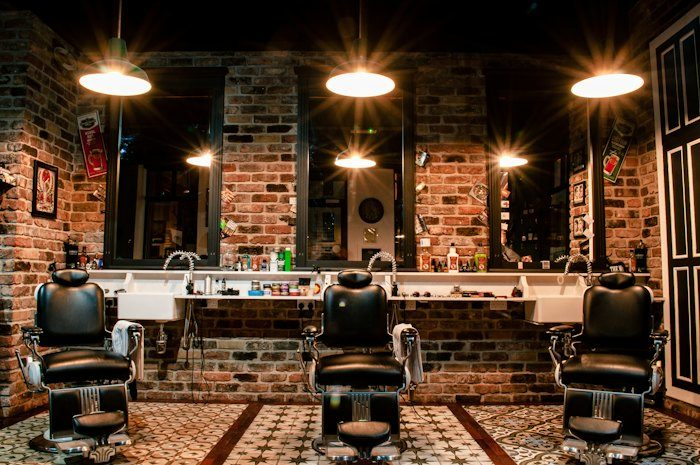

Стрижка, которую видно до записи
10 салонов во Владимире, 47 услуг по прайсу сети. Клиент выбирает салон, услугу и мастера, прикладывает фото и референс, а мастер получает разбор: что подойдёт, почему нет, как стричь по зонам и чем укладывать. Можно записаться заранее или взять талон живой очереди.
Демо на реальном прайсе и адресах сети. Заявки, талоны и фото сохраняются в SQLite и остаются после перезагрузки.

Записаться или взять талон
Салон, услуга из прайса, фото и референс. Для стрижки — разбор от мастера, для остальных услуг — просто запись на время.
Открыть клиентское приложение → 02 · МАСТЕРРабочее место мастера
Очередь заявок и живая очередь салона, фото клиента с референсом, разбор по зонам, запись, оплата и отзывы в одном экране.
Открыть рабочее место мастера →Фото и референс
Клиент загружает себя и пример стрижки. Фото сжимаются в браузере и лежат на диске, а не в облаке.
Разбор по правилам
Каталог из 20 стрижек с экспертной оценкой: форма лица, тип и густота волос, бюджет, время на укладку. На выходе — пошаговая техника, насадки и риски.
От заявки до отзыва
Статусы, история событий, перенос времени, оплата и оценка после услуги. Всё сохраняется в базе.